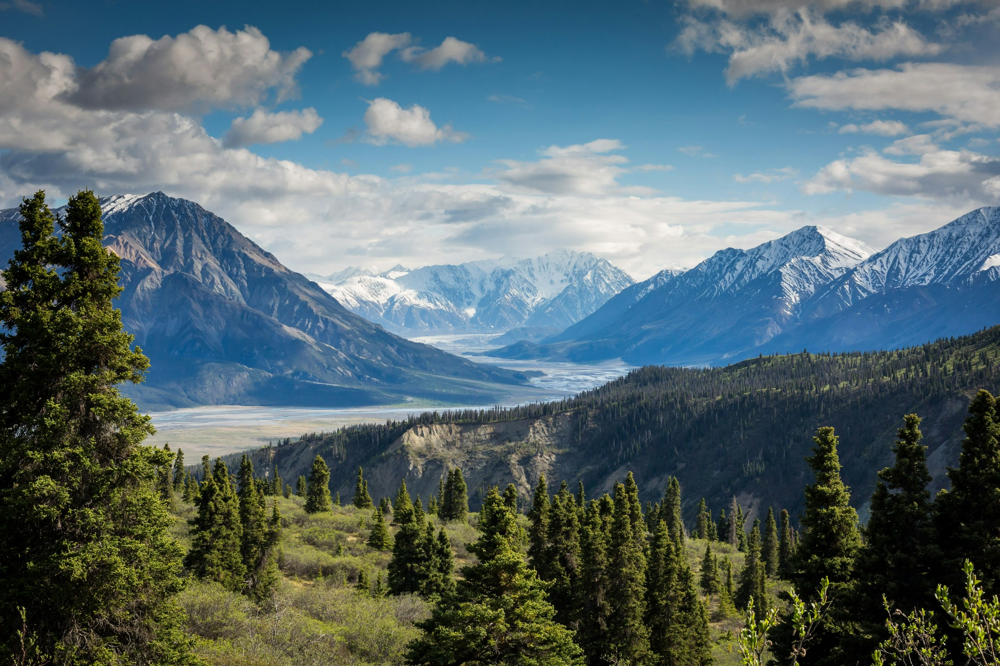

FOR THE WANDERERS & THE
WONDERERSAN OPEN-AIR JOURNAL / VOL. 01
A little further
outside.
Less scrolling. More wandering.
Find a place that makes you
feel small,
and a moment that stays with you.
A CHANGE
OF SCENERY STARTS HERE Somewhere
beyond the everyday.
No bucket lists. Just better moments.
Fresh air. Open trails. A different perspective.01 / FOLLOW YOUR CURIOSITY
Find your kind of away.
You don’t have to go far.
You just have to go a little
differently.
02 / A DIFFERENT WAY OUT
The best things happen
when you take your time.
Fieldwork is a small reminder to make more space for the world
outside.
Not to conquer it. To connect with it.
01
Wander with intention.
Trade the packed itinerary for an open afternoon. Follow a trail, a feeling, or the path you usually walk past.
02
Leave a lighter trace.
Stay on the path. Carry out what you carry in. Give wildlife room, and leave the little discoveries where they belong.
03
Notice the little things.
The shape of a leaf. The sound before sunrise. Some of the best parts of being outside will never fit in a photograph.
03 / NOTES FROM OUT THERE
Little stories. Wide horizons.
A MOMENT OUTSIDE
The art of looking closer.
A few seconds with the small things. Watch the flowers move, let your shoulders drop, and take a breath.
An afternoon with
nowhere to be.
Why leaving a little room in your plans can lead to the best kind of detour.
Your next adventure
might be next door.
A fresh perspective on the places you thought you already knew.
Go somewhere.
Come back a little different.